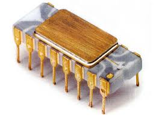

By Kartik Kumar Rajnikant
Intel 4004 Microprocessor was introduced on November 15, 1971.This Chip was part of a MCS-4 family. It was created to use in calculator, cash register, ATMs. They were sometime used for simple business systems. The comparison between the early manufacturing and todays production is very different. In the early days Intel 4004 microprocessor was produced on a 2-inch wafer and it had the width if 10 microns or 10,000 nanometres, whereas todays they are made on 12-inch wafers, with the width range from 45 to 32 nanometre. This microprocess was smallest processor every put into a commercial production.
